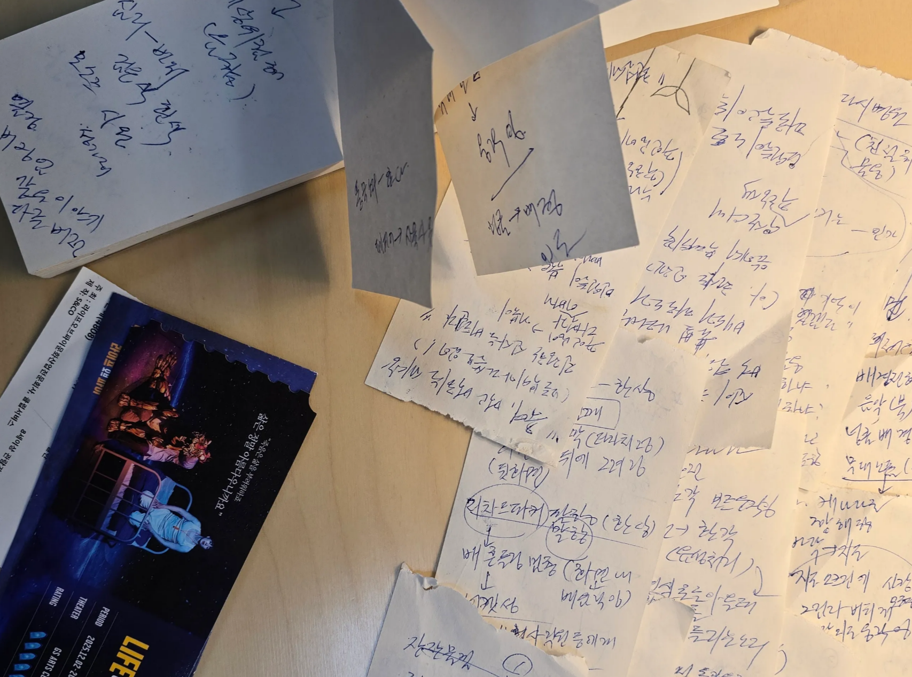
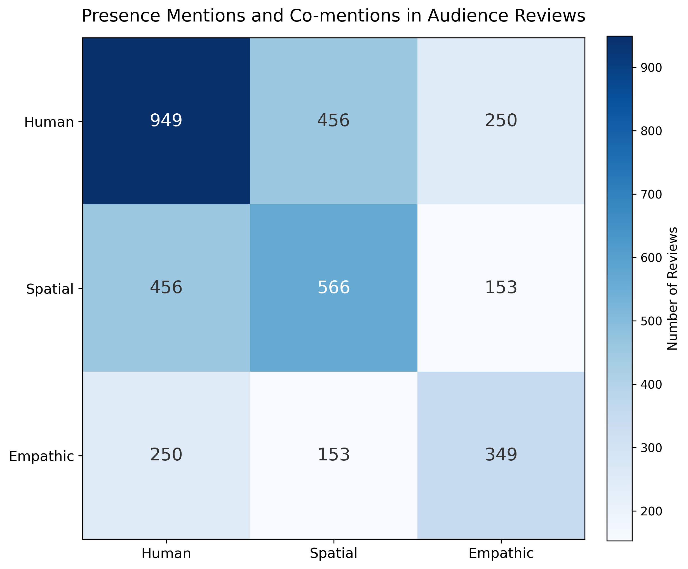
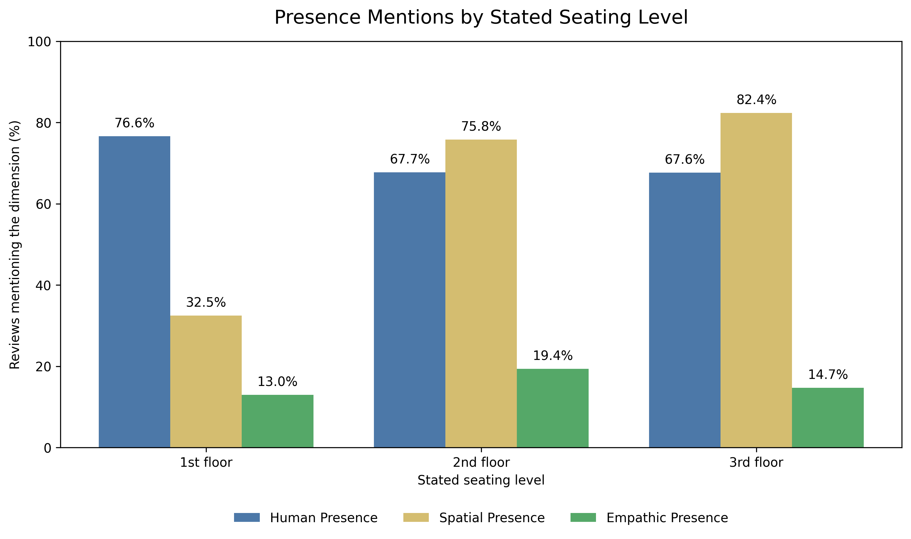
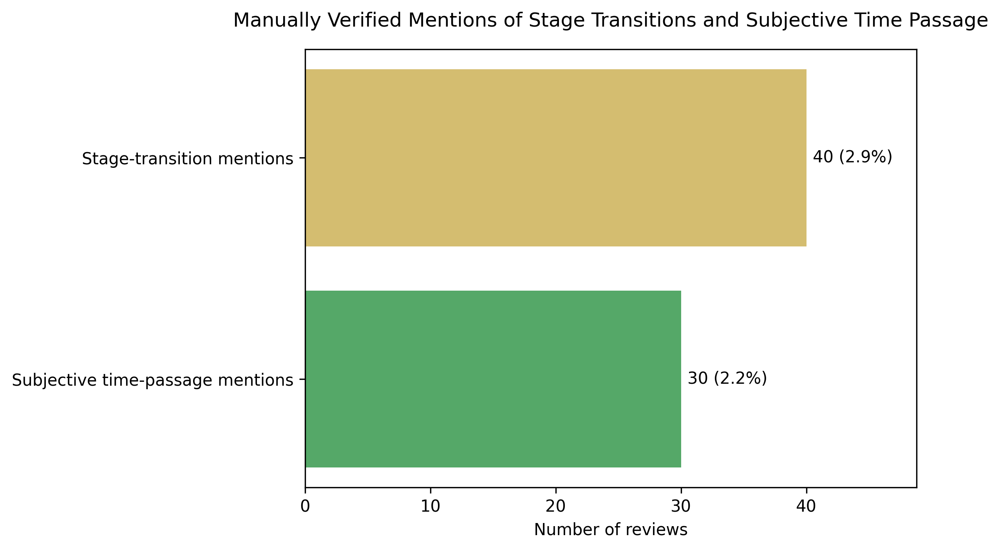
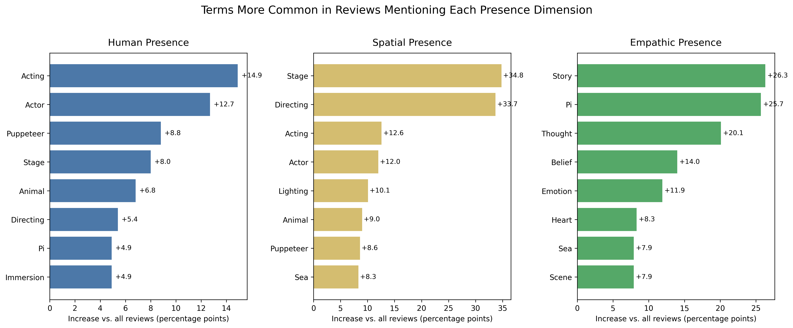

Life of Pi: Audience presence and perception
How I tried to understand why a stage can feel real by reading and analyzing 1,376 audience reviews.
1. Where the question began
To be honest, I also had a practical reason for starting this project. I wanted to finish at least one research project before graduating from high school. I did not know exactly what I wanted to study, but I wanted the project to be connected to something I had really experienced.
I had worked in school theater for three years, both backstage and onstage. This made me curious about what audience members experienced. They knew that the actors were acting and that the tiger in Life of Pi was a puppet. However, they could still feel afraid of the tiger or become emotional about Pi’s story. I wondered how a stage could feel real even when the audience knew that it was not real.
At the theater
Looking closely at the size and movement of the Richard Parker puppet.
2. How the research changed

My notes from the performance
Notes I wrote during the performance and organized again after returning home.
At first, I thought I could collect audience reviews, count some words, and find an answer. I began with three categories: human presence, spatial presence, and empathic presence. I marked only the most noticeable category in each review with a circle.
I watched the performance from the third floor. From there, I could see the whole stage and the floor projections clearly. The stage design was one of the most impressive parts for me, but it was difficult to see the actors’ faces. While reading the reviews, I often remembered my own experience. I began to wonder whether people sitting on different floors noticed different parts of the performance.
Because of this, I started recording seat information. If a reviewer clearly wrote the floor, I recorded it as a stated seat. If the exact floor was not written but the review gave some clues, I kept it separately as an estimated upper or lower seat.
I also noticed that many reviewers said they had watched the performance more than once. I do not go to the theater very often, so I was surprised by how often this appeared. I decided to mark repeat attendance in case it showed a pattern later.
As I continued, I found a problem with this system. Many reviews talked about more than one kind of presence. Sometimes I read the same review several times and still could not decide which single category to choose. I was not sure whether my decisions were fair. I felt confused, and I began to think that this work was going beyond what I knew how to do.
I finally changed the system so that one review could have more than one category. Inside human presence, I also separated comments about actors from comments about puppets and puppeteers.
As the spreadsheet became more organized, I changed the circles into 1. Near the end, I noticed that a few reviews described actors, puppets, or stage effects negatively. I added -1 for these negative descriptions. A blank cell meant that the review did not clearly mention that category.
Collecting, coding, changing the rules, and checking the reviews again took almost six months. Writing and revising the report continued after the analysis, so the full project took almost seven months. I did much of this while also doing my regular schoolwork. Sometimes I felt that I could not finish the project. I could have kept the earlier rule and finished sooner, but it no longer seemed fair to the reviews.
3. Research snapshot
4. Final coding system
In the final version, I used three main categories. I looked at what the reviewers described, not only whether they used a certain word.
| Category | What I looked for in the reviews |
|---|---|
| Human presence | Positive comments about actors, puppets, or puppeteers, including acting, voices, movement, or puppets feeling alive. |
| Spatial presence | Comments that the stage felt like a real place, or positive comments about lighting, sound, projections, or stage design. |
| Empathic presence | Comments that connected Pi’s story, faith, survival, or emotions with the reviewer’s own thoughts or feelings. |
A. How I marked the reviews
- 1 meant that I found a clear positive mention that met the rule.
- -1 meant that the reviewer described that part of the performance negatively.
- A blank cell meant that I did not find a clear written mention. It did not mean that the reviewer did not have the experience.
B. Additional information I marked
- Actors and puppets: Inside human presence, I marked actors separately from puppets and puppeteers.
- Directly stated seats: I recorded the exact floor when a reviewer clearly mentioned it.
- Estimated seats: When the exact floor was not written but the review gave enough clues, I marked it separately as an estimated upper or lower seat.
- Repeat attendance: I marked reviews written by people who said that they had watched the performance more than once.
For the seating-level analysis, I used only the 173 reviews that directly stated the floor. I kept the estimated seats in my working spreadsheet, but I did not include them in the seating figure.
5. What I found
A. Overall patterns

Presence mentions and co-mentions in 1,376 audience reviews
The diagonal cells show the number of reviews with a positive mention in each category. The other cells show how often two categories appeared together. One review could be included in more than one category.
Human presence appeared most often, in 949 reviews (69.0%). Spatial presence appeared in 566 reviews (41.1%), and empathic presence appeared in 349 reviews (25.4%).
Human and spatial presence appeared together in 456 reviews. Human and empathic presence appeared together in 250 reviews, while spatial and empathic presence appeared together in 153 reviews. Human and spatial presence were the most common pair.
I used chi-square tests to compare each pair of presence categories. Only human and spatial presence showed a statistically clear relationship. The relationship was not very strong, but it showed that reviewers often described the performers and the stage together. It did not show that one caused the other.
B. Seating level

Presence mentions by stated seating level
This figure includes only the 173 reviews that clearly stated the seating floor.
Spatial presence appeared in 32.5% of the first-floor reviews, 75.8% of the second-floor reviews, and 82.4% of the third-floor reviews. Human presence showed a different pattern. It appeared in 76.6% of the first-floor reviews and about 68% of the reviews from the second and third floors.
Empathic presence was mentioned less often on every floor. It appeared in 13.0% of the first-floor reviews, 19.4% of the second-floor reviews, and 14.7% of the third-floor reviews.
The spatial pattern reminded me of my own experience on the third floor. I could see the whole stage and the floor projections clearly, but the actors’ faces were more difficult to see.
This made me wonder whether the seating level changed what audience members noticed. However, only 173 reviewers clearly stated their floor, and the reviewers had chosen their own seats. I could see a pattern in these reviews, but I could not say that the seat caused the difference.
C. Repeat attendance
Among the 190 repeat-attendance reviews, 149 mentioned human presence (78.4%), 67 mentioned spatial presence (35.3%), and 73 mentioned empathic presence (38.4%). The largest difference from the full dataset appeared in empathic presence.
The repeat-attendance reviews also used words such as Pi, story, emotion, feeling, and thought more often than the full dataset. I found this interesting because these reviewers wrote more about Pi’s story and their own thoughts.
However, I could not treat all other reviews as first-time attendance. Some people may have watched the performance more than once without writing it in their review. This was interesting, but I could not tell whether watching the play more than once increased empathic presence.
D. Stage transitions and time passage

Manually checked mentions of stage transitions and time passage
The percentages are based on the 1,376 reviews in the main analysis.
While reading and coding the reviews, I used different colors to mark words and sentences that seemed important. Some of these reviews described changes between scenes or said that time passed very quickly during the performance.
Later, I chose search words from the expressions I had marked. I used Python to search all 1,376 reviews, and it found 74 possible matches. I then read these reviews again because the same word did not always have the same meaning.
After checking them, I kept 40 reviews that clearly mentioned stage or scene transitions and 30 that described time passing quickly. Python helped me find the possible reviews, but it did not decide which reviews should be counted.
The search may have missed reviews that described the same experience with different words. These were also only small parts of the full dataset, so I treated them as additional observations rather than main results.
E. Words connected to each category

Words more common in reviews mentioning each presence category
The bars show how many percentage points more often each word appeared compared with the full dataset.
I used Kiwi, a Korean text analysis tool, to separate the review sentences into words. I counted each word only once in a review, even if the reviewer used it several times. I then compared the reviews in each presence category with the full dataset.
Reviews with human presence used words such as acting, actor, and puppeteer more often. Reviews with spatial presence used stage, directing, and lighting more often. Reviews with empathic presence used words such as story, Pi, thought, belief, and emotion more often.
These words did not prove that my categories were correct. They came from the same reviews that I had already coded. Still, they helped me see some differences among the three groups.
6. What I learned
Python and JASP were difficult for me, but they were not the hardest part. The hardest part was deciding how to turn a person’s review into data without losing too much of what the person meant. The final numbers look clear, but each number came from many decisions that were not always clear to me.
When a review was difficult to classify, I sometimes used an AI tool to compare possible interpretations. It was not reliable enough to make coding decisions, so I checked the original review and applied the rules myself.
When I changed one coding rule, I could not keep using all of my earlier work as it was. I had to return to the reviews and check them again. At first I thought consistency meant keeping the same rule. Later, I realized that I also needed to correct a rule when it was not working.
I also learned that an interesting pattern is not the same as a cause. The seating and repeat-attendance results gave me new questions, but they did not give me final answers about why audience members wrote differently.
The reviews were also not the same as the whole audience. Most reviews had high ratings, and people wrote only what they wanted to share. If someone did not mention one kind of presence, I could not assume that the person did not experience it.
I was the only person making the coding decisions, so another person might have made some choices differently. Seat and repeat-attendance information was available only when a reviewer wrote it. Because of this, I tried to keep my conclusions close to what the reviews actually showed. So I see these as patterns in reviews of this Korean production, rather than conclusions about theater audiences in general.
7. Research development log
At first, I did not mark every category that appeared in a review. I chose only the one that seemed most noticeable. This worked for short reviews, but it became difficult when a review talked about several parts of the performance.
The log below shows how the project changed as I worked on it.
7. Research Development Log
8. Research materials
Status (October 2026): Research report completed · Paper in development